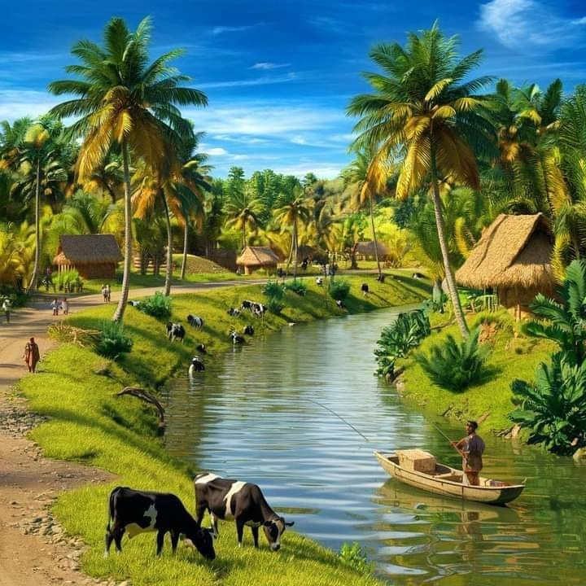
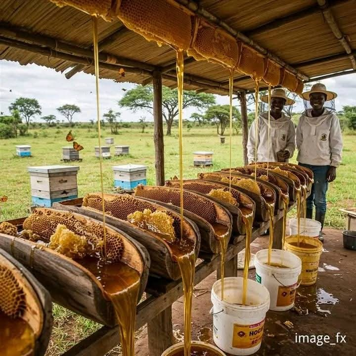
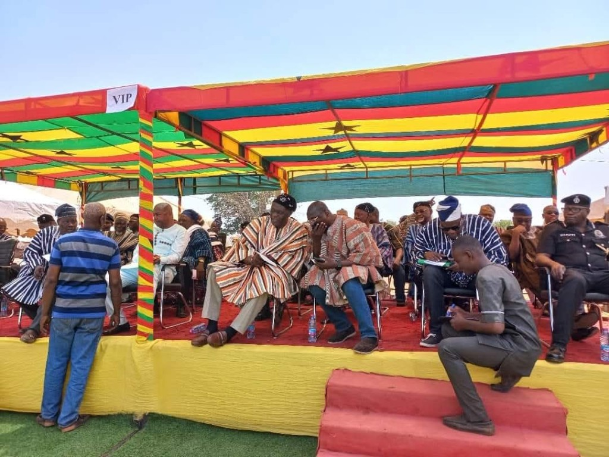
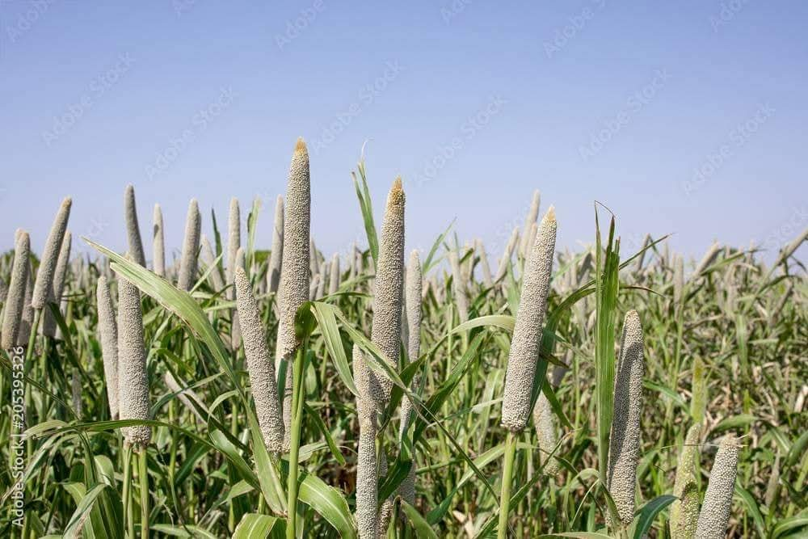

Their development is phased, with activities shaped by leadership, partnerships and resources. Four shared platforms support data, policy, finance and international collaboration. Learning across them is carried by the Savannah Futures Academy.
Four institutional priorities — climate-resilient landscapes, population health, peace and indigenous governance, and food futures — set the strategic frame. The five centres below are the specialist homes that deliver that agenda, with indigenous knowledge, culture, policy engagement and community participation cross-cutting throughout.

Climate, Environment & Landscape Futures
Climate, ecosystems, water, biodiversity and landscape stewardship.
Explore →
Population Health Innovation Futures
Environmental health, NCDs, NTDs and resilient health systems.
Explore →
Food Systems and Bioeconomy
Agriculture, nutrition, enterprise and bioeconomy.
Explore →
Peace, Security & Borderland Futures
Governance, mediation, mobility and human security.
Explore →
Culture, Indigenous Knowledge and Governance
Traditional governance, heritage, language and culture.
Explore →